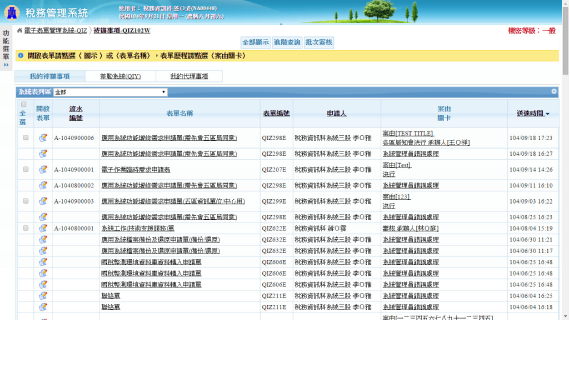
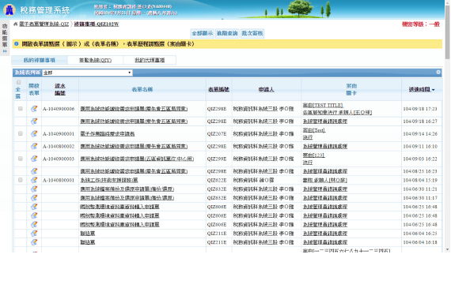

-
Book Sharing Side Project
Ruby on Rails System Design
-
Psychologist Matcher
Ruby on Rails System Design
-
Indexed Captioned Searchable Player
Python Django
-
Electronic Form
Ruby on Rails
-
Java
Java
Book Sharing

Summary
Every book has a journey for different owners. We believe that sharing books can play roles for not only spreading knowledge also enhancing communication between people. Our project is aimed to touch the nature part of the human being, sharing without feedback.
Lecture Video Materials Extraction Using Indexed Captioned Searchable Player
Summary
In this project, using the concept of Indexed, Captioned and keyword Searchable (ICS) Videos and implementing it with website player by using Automatic Speech Recognition (ASR), Optical Character Recognition (OCR) and Label Detection to build smarter searchable video with keyframe indexing, keyword searchable, auto-generated captions to improve the user experience of learners. Since there are many existing libraries and pre-trained models for ASR, OCR and image labelling, this project uses OpenCV and Google's online APIs such as Speech API and Vision API for analysis and indexing in lecture videos.
Title
 

Summary
In this project, using the concept of Indexed, Captioned and keyword Searchable (ICS) Videos and implementing it with website player by using Automatic Speech Recognition (ASR), Optical Character Recognition (OCR) and Label Detection to build smarter searchable video with keyframe indexing, keyword searchable, auto-generated captions to improve the user experience of learners. Since there are many existing libraries and pre-trained models for ASR, OCR and image labelling, this project uses OpenCV and Google's online APIs such as Speech API and Vision API for analysis and indexing in lecture videos.